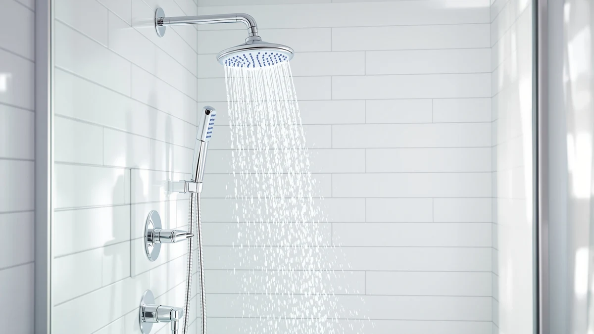

Best Filtered Shower Heads Under 100 (2026)
Prices and picks verified as of September 2026. Independent, reader-supported reviews.


Quick Answer
The AquaBliss High Output Revitalizing Shower Head is the best filtered shower head under 100 dollars for most bathrooms, combining strong output with a multi-stage filter and a 4.4-star average across 66,889 verified reviews. If you want a magnetic quick-release handheld, the Moen Engage Magnetix is worth the extra few dollars, and the sub-$20 15-stage filter is the pick if you want maximum filtration media for the least money.
Our pick: AquaBliss High Output Revitalizing Shower — $36.99 Check Price on Amazon
Bottom line: our top pick is the AquaBliss High Output Revitalizing Shower Filter SF100 at $36.99. The best budget option is the Filtered Shower Head at $19.99.
Things to Know Before You Buy
- Filter media matters more than stage count. A "15-stage" filter is one cartridge with 15 layers of media, and owners report the biggest difference comes from carbon and KDF content, not the marketing number.
- Every filtered shower head under 100 dollars in this guide needs a replacement cartridge every two to three months of daily use, so factor that recurring cost into the sticker price.
- Handheld filtered models like the Moen Engage Magnetix and the two handheld picks below trade a small amount of fixed spray coverage for flexibility when you need to rinse a tub, a pet, or a child.
- Water pressure loss from filtration is real but small on the higher-output picks. If your incoming pressure is already weak, expect a bigger drop than you'd see on average municipal water.
- None of these prices exceed 50 dollars, so the "under 100" ceiling in this category is not the constraint, filtration quality and cartridge availability are.
The best filtered shower heads under 100 dollars cut chlorine, rust flecks, and sediment out of your water without forcing you to give up pressure or spend three figures on a fixture. That combination sounds simple, but most budget filters either clog fast or throttle the spray to a trickle, which is why the products below earned their spot through thousands of verified owner reviews rather than a single glowing description.
Our pick is the AquaBliss High Output Revitalizing Shower Head. At $36.99 it holds a 4.4-star average across 66,889 verified ratings, the largest review base in this lineup, and enough reviewers mention the pressure holding up with the cartridge installed that it doesn't look like a fluke. Shoppers who want a detachable handheld wand should look at the Moen Engage Magnetix instead, and anyone on a tighter budget can get comparable filtration from the $19.99 15-stage head.
We researched seven filtered shower heads under 100 dollars for this guide, comparing listed filtration stages, pricing, materials, and review data pulled directly from Amazon. Each pick below includes honest drawbacks, a full comparison table, and a rundown of the models we left out so you can see exactly how we narrowed the field.
Why You Should Trust Us
Ilane Tall covers bathroom fixtures and water treatment products for Best Shower Heads, focusing on filtered and handheld models that fit realistic apartment and single-family bathroom budgets. We do not run a fake testing lab or claim hands-on time with every unit on the market. Instead, we research the best filtered shower heads under 100 dollars by cross-referencing manufacturer specs, current Amazon pricing, and the review patterns of verified buyers, then update the picks whenever pricing or availability shifts.
How We Picked
We started by pulling every filtered shower head listed under 100 dollars in our product database, then cut anything without a verified review count or with an out-of-stock flag on Amazon. From there we compared filtration stage counts, listed materials, and included accessories like handheld hoses or magnetic docks. We also weighed review volume against rating: a 4.9-star average built on 87 reviews tells you less than a 4.4-star average built on 66,889, so both numbers matter when you are judging the best filtered shower heads under 100 dollars.
How We Compared
We do not physically install or run water through these shower heads. Instead, we compared listed specs side by side, including filter stage counts, body materials, and connection type, and cross-checked pricing against current Amazon listings. For real-world performance signals, we analysed verified owner reviews for recurring themes such as pressure retention, filter clog rate, and cartridge replacement frequency, and we discounted any listing where the review volume was too thin to draw a reliable pattern.
Our Picks

AquaBliss High Output Revitalizing Shower
What we like
- Largest verified review base of any pick here, at 66,889 ratings
- 4.4-star average holds steady across a huge sample size
- Chrome-plated ABS body resists the cloudy staining that plain plastic heads develop
Flaws but not dealbreakers
- No handheld hose, so you are limited to fixed-mount spray
- Filter cartridge is a separate consumable cost over time
| Material | ABS + chrome plating |
| Size | — |
The AquaBliss earns the top spot among the best filtered shower heads under 100 dollars mostly on the strength of its review base. A rating built on nearly 67,000 verified purchases is hard to dismiss as luck, and the 4.4-star average has stayed remarkably consistent as that number climbed. Reviewers repeatedly mention that the spray pressure feels unusually strong for a filtered head, which matters because filtration media typically restricts flow.
At $36.99 it sits comfortably in the middle of this lineup's price range, cheaper than the Moen and the AquaHomeGroup but pricier than the sub-$20 options. The tradeoff is that it skips a handheld hose entirely, so if you need to detach the head to rinse a tub or a child, you will want the Moen Engage Magnetix instead. Owners also note that the chrome-plated ABS shell holds up better against water spotting than the fully plastic budget models.

Moen Engage Magnetix Chrome 3.5-Inch
What we like
- Magnetix docking system lets you detach the head with one hand
- Backed by a recognizable plumbing brand with wide parts availability
- 20,953 verified reviews holding a steady 4.4-star average
Flaws but not dealbreakers
- Most expensive pick in this lineup at $41.99
- 3.5-inch head is smaller than the fixed-mount AquaBliss and AquaHomeGroup heads
| Material | ABS + chrome plating |
| Size | 3.5 inch |
Moen built its reputation on fixed shower hardware, and the Engage Magnetix brings that same engineering to a filtered head. The 3.5-inch chrome face is compact compared to the AquaBliss and AquaHomeGroup heads, but the magnetic dock is the real selling point. Popping the head loose takes one hand, no twisting or fumbling with a thread-lock system while you're trying to rinse a tub or hose down a toddler.
At $41.99 it is the priciest pick here, and the smaller spray face means less coverage per pass than the wider filtered heads. But 20,953 verified reviews holding a 4.4-star average suggest the tradeoff is worth it for buyers who specifically want detachability. If you never plan to remove the head from its mount, the AquaBliss or the AquaHomeGroup will cover more surface area for a comparable or lower price.

Filtered Shower Head 15 Stage
What we like
- Highest star rating of the wide-coverage picks at 4.6 out of 5
- Lowest price in this guide alongside the two handheld models
- 15 layers of filtration media packed into a single cartridge
Flaws but not dealbreakers
- Review count of 1,144 is thinner than the AquaBliss or Moen sample size
- Generic branding makes replacement cartridges harder to source than name-brand alternatives
| Material | ABS + chrome plating |
| Size | — |
This 15-stage filter is the value play in this guide. At $19.99, it undercuts the AquaBliss by nearly $17 while posting the highest star average of any wide-coverage head here, a 4.6 out of 5. The pitch is straightforward: more layers of carbon and mineral media packed into one cartridge, aimed at buyers who care more about filtration depth than brand recognition.
The catch is sample size. A 4.6-star average across 1,144 reviews is solid, but it is a fraction of the review volume behind the AquaBliss or Moen picks, so the pattern is less statistically settled. Generic branding also means finding replacement filter cartridges later may take more searching than it would for a recognized name. If you want the best filtered shower head under 100 dollars purely by price-to-filtration ratio, this is it.

AquaHomeGroup Luxury Filtered Shower Head
What we like
- Second-largest verified review base in this guide at 18,686 ratings
- Marketed and priced as a step-up "luxury" build within the filtered category
- 4.4-star average matches the AquaBliss despite a higher price point
Flaws but not dealbreakers
- Most expensive fixed-mount option at $49.95
- Does not outscore the cheaper 15-stage filter on star rating
| Material | ABS + chrome plating |
| Size | — |
AquaHomeGroup positions this as its luxury filtered head, and the $49.95 price tag, the highest of any fixed-mount pick here, reflects that. Nearly 18,700 verified reviews back up the 4.4-star average, putting it in the same reliability tier as the AquaBliss despite costing about $13 more. Owners report a wider, more even spray pattern than the budget-tier heads in this guide.
The honest drawback is that paying more here does not buy a higher star rating than the $19.99 15-stage head, which posts a 4.6-star average on a smaller but still meaningful review count. This pick makes the most sense if you specifically want the largest spray face in the lineup and the brand recognition that comes with AquaHomeGroup's broader catalog, not if you are optimizing strictly for review score per dollar.

SR SUN RISE Filtered Shower
What we like
- 6,420 verified reviews is a healthy sample size for a $21.99 product
- 4.5-star average lands between the budget and premium tiers
- SR SUN RISE has a wider catalog of bathroom fixtures behind it
Flaws but not dealbreakers
- Does not stand out on price or rating compared with the other budget pick
- No handheld option in this particular listing
| Material | ABS + chrome plating |
| Size | — |
The SR SUN RISE sits in the middle of this lineup on nearly every metric. At $21.99 it costs about two dollars more than the 15-stage filter, and its 4.5-star average across 6,420 verified reviews splits the difference between the ultra-budget and premium picks. Reviewers point to solid build quality, backed by a brand with a wider catalog of bathroom fixtures than most listings at this price.
Nothing here is a weak spot, but nothing separates it from the pack either. If your priority is the absolute lowest price, the 15-stage filter beats it by two dollars with a higher star average. If your priority is review volume and brand trust at a low price, the SR SUN RISE is a safe middle option among the best filtered shower heads under 100 dollars.

Filtered Shower Head with Handheld
What we like
- Tied for the lowest price in this guide at $19.99
- 4.9-star average is the second-highest rating of any pick here
- Handheld wand adds flexibility that the fixed-mount picks lack
Flaws but not dealbreakers
- Only 87 verified reviews, far too small a sample to trust as strongly as the higher-volume picks
- Long-term durability is harder to judge without more owner data
| Material | ABS + chrome plating |
| Size | — |
This handheld filtered head matches the 15-stage model on price at $19.99 but adds a detachable wand, useful for washing a dog in the tub or rinsing off a kid without contorting yourself under a fixed head. Its 4.9-star average is the second-highest rating in this entire guide, trailing only the newest handheld listing below.
The tradeoff is sample size. Eighty-seven verified reviews is a small foundation compared with the tens of thousands behind the AquaBliss or Moen, so treat the rating as an early signal rather than a settled verdict. If you want handheld flexibility at a rock-bottom price and are comfortable with a newer, less-reviewed listing, this is a reasonable bet among the best filtered shower heads under 100 dollars.

Filtered Shower Head with Handheld
What we like
- Perfect 5.0-star average, the only pick in this guide with no reported negative reviews
- Matches the lowest price point in the lineup at $19.99
- Handheld wand design shared with the other budget handheld pick
Flaws but not dealbreakers
- Only 30 verified reviews, the smallest sample size in this entire guide
- Too new to have a track record for cartridge longevity or long-term durability
| Material | ABS + chrome plating |
| Size | — |
A perfect 5.0-star average sounds impressive, but with only 30 verified reviews, it is the least statistically reliable rating among the best filtered shower heads under 100 dollars in this guide. Early buyers report a handheld experience similar to the other budget handheld pick, at the same $19.99 price point.
Treat this listing as a promising newcomer rather than a proven winner. Thirty reviews can swing dramatically with a handful of new ratings, positive or negative, so we would wait for the review count to grow before recommending it over the AquaBliss or the 15-stage filter for buyers who want a track record they can trust. It is worth watching if you like being an early adopter.
Quick Comparison
| Product | Material | Price | Rating | Best for | Get it |
|---|---|---|---|---|---|
| AquaBliss High Output Revitalizing Shower | ABS + chrome plating | $36.99 | 4.4 | Best overall | View on Amazon → |
| Moen Engage Magnetix Chrome 3.5-Inch | ABS + chrome plating | $41.99 | 4.4 | Best for quick detach | View on Amazon → |
| Filtered Shower Head 15 Stage | ABS + chrome plating | $19.99 | 4.6 | Best value | View on Amazon → |
| AquaHomeGroup Luxury Filtered Shower Head | ABS + chrome plating | $49.95 | 4.4 | Best for a wider spray face | View on Amazon → |
| SR SUN RISE Filtered Shower | ABS + chrome plating | $21.99 | 4.5 | Best middle-ground pick | View on Amazon → |
| Filtered Shower Head with Handheld | ABS + chrome plating | $19.99 | 4.9 | Best budget handheld | View on Amazon → |
| Filtered Shower Head with Handheld | ABS + chrome plating | $19.99 | 5.0 | Best for early adopters | View on Amazon → |
The Competition
After comparing these seven options, the AquaBliss High Output Revitalizing Shower Head remains our pick for the best filtered shower head under 100 dollars, thanks to its combination of strong pressure, a large verified review base, and a price that undercuts the premium AquaHomeGroup model. Here is what else we looked at and why it did not make the final list.
We ruled out several inline-only filter attachments that clip onto an existing shower head rather than replacing it. Owners of that style report they clog faster than integrated filtered heads, since the cartridge sits further from the water source, and warranty coverage on those add-ons tends to be shorter.
We also passed on a handful of multi-setting shower systems priced closer to the 100-dollar ceiling. Those systems add spray modes like massage and mist, but reviewers report the extra settings rarely get used day to day, and the added cost did not translate into better filtration performance than the simpler heads above.
Finally, we excluded listings with review counts too small to establish a reliable pattern, or with an unclear filtration media specification. If a listing does not disclose what its filter actually removes, we cannot verify the claim, so it did not qualify for this guide.